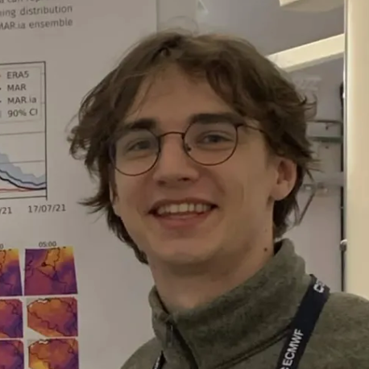
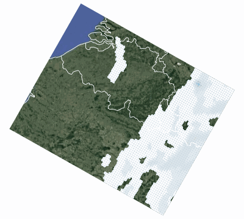
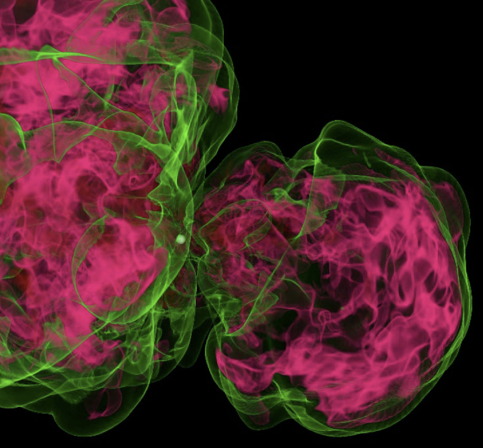

Sacha Peters
I'm a PhD student in AI for weather forecasting at the University of Liège, supervised by Gilles Louppe and Xavier Fettweis.
I'm building MARionette, a diffusion-based emulator of the regional climate model MAR and I use it to generate fast weather forecast ensembles. Before that, I worked on deep learning for gravitational wave detection.

Research

MARionette : a generative emulator of the Regional Climate Model
Work in progress, 2026
A diffusion model maps 6-hourly ERA5 (0.25°) to hourly MAR fields at 5 km. Sampling is fast and probabilistic, to get ensembles to measure uncertainty.

Talks & posters
- MAR.ia: How diffusion-based approaches can reproduce extreme weather events. EGU 2026, Vienna (talk)
- MAR.ia: a diffusion-based emulator for high-resolution climate downscaling over Belgium. 5th ECMWF-ESA Machine Learning Workshop, Bologna, 2026 (poster)
- ELLIS Winter School on AI for Earth System, Hazards and Climate Extremes, Athens, 2026 (poster)
- Evaluating deep neural networks for subtracting Newtonian noise in GW detectors. XV Einstein Telescope Symposium, Bologna, 2025 (talk)
- U-NET for minute-long unmodelled gravitational wave bursts. ACE seminar #29 - ULiège @ CERN, CERN 2024 (talk)
Education
- PhD, AI for weather forecasting, University of Liège, 2025 – present
- MSc Space Sciences, University of Liège, 2022 – 2024
- BSc Physics, University of Liège, 2019 – 2022